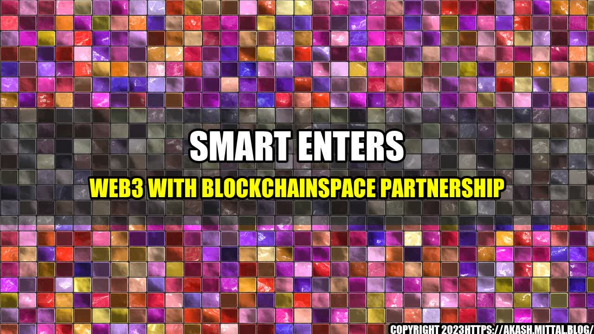

The Revolution of Telcos: Smart Enters Web3 with BlockchainSpace Partnership

When John, a resident in rural Philippines, tried to make a call from his mobile phone, he found no signal. He tried walking to different locations to get a signal but to no avail. A few days later, he heard about Smart Communications, a telecommunication company that promised nationwide coverage and service reliability, and he decided to give it a try.
To his surprise, not only did his mobile phone receive an excellent signal, he was also introduced to the world of Web3. With Smart's partnership with BlockchainSpace, John is now able to learn about blockchain technology and participate in decentralized applications (dApps) that offer financial services and even gaming experiences that can change his life.
Smart's partnership with BlockchainSpace is just one example of how telcos are embracing the revolution of Web3 and integrating blockchain technology into their services. Web3, or the third generation of the internet, is a decentralized network where information and data are controlled by individuals instead of centralized servers. This allows for greater security, transparency, and personal control of data.
The Quantifiable Impact of Web3 in Telcos
The integration of Web3 by telcos offers a wide range of opportunities that can create a quantifiable impact on both the telco industry and customers. Here are some examples:
- Lower transaction fees for international remittances
- Faster processing and settlement time for payments
- Access to credit and loans without traditional bank requirements
- Increased security and transparency in personal data and transactions
- Creation of new revenue streams through dApps and NFTs
The Eye-Catching Partnership of Smart and BlockchainSpace
The partnership between Smart and BlockchainSpace offers a unique experience for Filipino users to explore the endless possibilities of Web3. BlockchainSpace, a blockchain and cryptocurrency education center, provides workshops, training, and social events to help individuals and enterprises understand and implement blockchain technology. With Smart's commitment to nationwide coverage and reliable service, the partnership opens up opportunities for Filipinos in urban and rural areas to explore decentralized financial systems and participate in the growing ecosystem of Web3 applications.
The 3-Point Conclusion of Telcos Embracing Web3
- Telcos are embracing Web3 by integrating blockchain technology into their services.
- Web3 offers a wide range of opportunities that can create a quantifiable impact on both the telco industry and customers.
- Partnerships between telcos and blockchain companies, such as that of Smart and BlockchainSpace, can bring Web3 to underprivileged areas and promote financial inclusion.
Practical Tips for Individuals to Explore Web3 through Telcos
- Research telcos that offer Web3 services and promotions.
- Join blockchain and cryptocurrency education centers, such as BlockchainSpace, to gain knowledge and insights on Web3.
- Explore Web3 dApps that offer financial services and gaming experiences.
- Experiment with non-fungible tokens (NFTs) and other Web3 assets.
- Participate in community events and social gatherings to learn more about Web3 and connect with like-minded individuals.
References:
- Smart Communications. (2021, October 5). Smart partners with BlockchainSpace to accelerate blockchain adoption in PH. Smart. Retrieved from https://smart.com.ph/About/newsroom/press-releases/2021/10/05/smart-partners-with-blockchainspace-to-accelerate-blockchain-adoption-in-ph
- Gupta, A. (2021, July 27). Blockchain in Telcos: Opportunities, benefits, and challenges. Analytics Insight. Retrieved from https://www.analyticsinsight.net/blockchain-in-telcos-opportunities-benefits-and-challenges/
- Seaman, J. (2021, August 30). WEB 3.0: What is it and how can it change the world? Forbes. Retrieved from https://www.forbes.com/sites/jonathanseaman/2021/08/30/web-30-what-is-it-and-how-can-it-change-the-world/
Hashtags:
- #SmartCommunications
- #BlockchainSpace
- #Web3
- #DecentralizedApplications
- #FinancialInclusion
- #NFTs
SEO Keywords:
- Smart Communications
- BlockchainSpace
- Web3
- Decentralized Applications
- Financial Inclusion
- NFTs
- Telcos
- Philippines
Article Category:
Technology and Finance
Curated by Team Akash.Mittal.Blog
Share on Twitter Share on LinkedIn